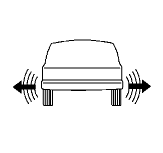

轮胎的诊断－侧摆故障

轮胎侧摆是在车辆前部和/或车辆后部的侧向移动。轮胎侧摆可能由以下原因引起：
•
轮胎内部的钢丝帘布不直
•
轮胎横向跳动量过大
•
车轮横向跳动量过大
轮胎侧摆在约8-48公里/小时（5-30英里/小时）低速行驶时最为明显。轮胎侧摆在约80-113公里/小时（50-70英里/小时）速度行驶时可能表现为行驶不平稳。轮胎侧摆在约80-113公里/小时（50-70英里/小时）速度行驶时可能表现为振动。
检查程序
1.
使用安全台架举升并顶起车辆。参见
举升和顶起车辆
。
警告：
检查轮胎时要戴手套，以免轮胎内的钢丝帘布伸出伤人。
2.
执行以下初步检查：
2.1
用有色粉笔标记轮胎起始和停止位置。
2.2
用手转动每个轮胎和车轮。
2.3
检查轮胎是否鼓包或车轮是否弯曲。必要时进行更换。
3.
使用轮胎替换法以确认故障轮胎。在轮胎替换检查中执行以下步骤：
3.1
每次用同等轮胎换下各轮胎。
3.2
路试车辆。
3.3
如果故障与轮胎或车轮相关，换掉故障轮胎后，故障将消除。